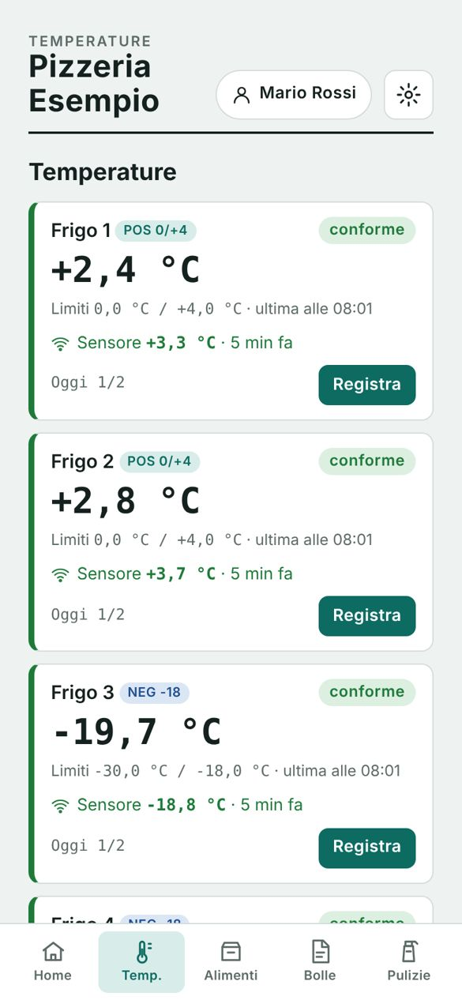

Il registro HACCP sul telefono. I frigo si controllano da soli.
Temperature, alimenti, pulizie, fornitori e documenti in un'app sola, pensata per chi lavora in cucina e al banco. Con i sensori WiFi i frigoriferi registrano la temperatura da soli e ti avvisano se qualcosa non va.

Le schede di carta si compilano di fretta, e si vede.
Fogli persi o compilati a fine mese
Con l'app ogni lettura ha data, ora e operatore. Il registro del mese è sempre pronto, ordinato per frigo.
Guasti scoperti la mattina dopo
Il sensore misura ogni 5 minuti. Se il frigo resta fuori temperatura per 20 minuti ti arriva un messaggio sul telefono.
Il controllo che arriva senza preavviso
Un tasto prepara il pacchetto per l'ispezione: registri, non conformità, fornitori e attestati in PDF.
Tutte le schede del manuale di autocontrollo, in tasca.
L'app parte già con i frigoriferi codificati, i limiti critici e il piano di pulizia del manuale. Tu aggiungi i tuoi fornitori e i tuoi prodotti.
Temperature
Frigo positivi 0/+4 °C e negativi −18 °C, due letture al giorno, azione correttiva se fuori limite.
Giro rapido a voce
«Frigo 1 due gradi, frigo 3 meno diciotto»: detti le temperature e spunti le pulizie fatte, un solo salvataggio.
Alimenti e lotti
Ricevimento merci, lotti, date di apertura e scadenze con avviso. Etichette stampabili.
Bolle e fatture
Fotografi la bolla e l'app legge fornitore, prodotti e lotti. Archivio per fornitore e scadenze di pagamento.
Pulizie e sanificazione
Piano giornaliero, settimanale e mensile già impostato. Ogni attività registrata con chi l'ha fatta.
Cotture, abbattimento e olio
Temperatura al cuore, abbattimento entro i tempi, controllo dell'olio di frittura.
Non conformità e allergeni
Ogni problema con la sua azione correttiva. Tabella allergeni dei piatti da mostrare ai clienti.
Personale e formazione
Attestati con scadenza, addestramento interno, firma digitale dei registri a fine mese.
Pronto per il controllo
Schede in PDF come quelle del manuale, pacchetto ispezione, backup dei dati in un tocco.
Una sonda in ogni frigo. Il registro si compila da solo.
Una piccola sonda in acciaio dentro il frigo, una schedina fuori, collegata alla corrente e al WiFi del locale. Niente fili da saldare: la installiamo noi o ti guidiamo passo passo.
Misura ogni 5 minuti
La temperatura arriva nell'app, sulla scheda di ogni frigo, giorno e notte.
Due letture al giorno nel registro
A inizio e fine servizio, se nessuno l'ha già fatto a mano, la lettura del sensore entra nel registro da sola.
Allarme sul telefono
Se un frigo resta fuori limite per 20 minuti, o la sonda si stacca, ti arriva un messaggio su Telegram. E un altro quando torna normale.
Anche senza internet per qualche ora
Se il WiFi cade, la schedina tiene in memoria fino a 8 ore di misure e le invia appena torna la rete.
Esempio: letture e messaggi come li vedi sul telefono.
In una mattina sei operativo.
Scrivi su WhatsApp
Mi dici che locale hai e quanti frigoriferi. Ti mando l'app da provare gratis.
La impostiamo sul tuo locale
Frigoriferi, piano di pulizia, fornitori e operatori: si parte dal tuo manuale di autocontrollo.
Aggiungi i sensori quando vuoi
Un frigo alla volta. Dal giorno dopo le temperature entrano nel registro da sole.
Per chi lavora con il cibo, ogni giorno.
Le domande che fanno tutti.
Funziona su iPhone e su Android?
Sì. Si apre dal telefono e si aggiunge alla schermata Home come un'app normale. Entri con la password, oppure con Face ID o impronta.
Sostituisce il manuale di autocontrollo?
No. Il manuale e la formazione del personale restano obbligatori. HACCP Facile serve a tenere ogni giorno le registrazioni che il manuale prevede, in ordine e pronte da mostrare.
Cosa mostro al controllo?
Le schede in PDF (temperature, pulizie, non conformità, fornitori, attestati) che apri dal telefono o stampi. C'è un tasto che le prepara tutte insieme.
Dove restano i miei dati?
Sul tuo telefono. L'app ti ricorda di scaricare un backup una volta al mese. L'accesso è protetto da password.
Quanto costano app e sensori?
Dipende da quanti frigoriferi hai e da cosa ti serve. Scrivimi: la prova è gratuita e il preventivo lo facciamo insieme.
I sensori sono difficili da montare?
No. La sonda si avvita su un morsetto e la schedina si collega con tre cavetti a incastro. La configurazione si fa da una pagina web in due minuti, oppure la facciamo noi.
E se il WiFi del locale cambia?
La schedina apre una sua rete: dal telefono ti colleghi e scegli il WiFi nuovo, senza computer.
Scrivimi e te la faccio provare sul tuo locale.
Rispondo io, Andrea, da Pontedera. Ti mostro l'app con i tuoi frigoriferi e il tuo piano di pulizia, poi decidi.
HACCP Facile aiuta a tenere le registrazioni previste dal manuale di autocontrollo. I sensori sono strumenti di monitoraggio: vanno verificati periodicamente con il termometro di riferimento.